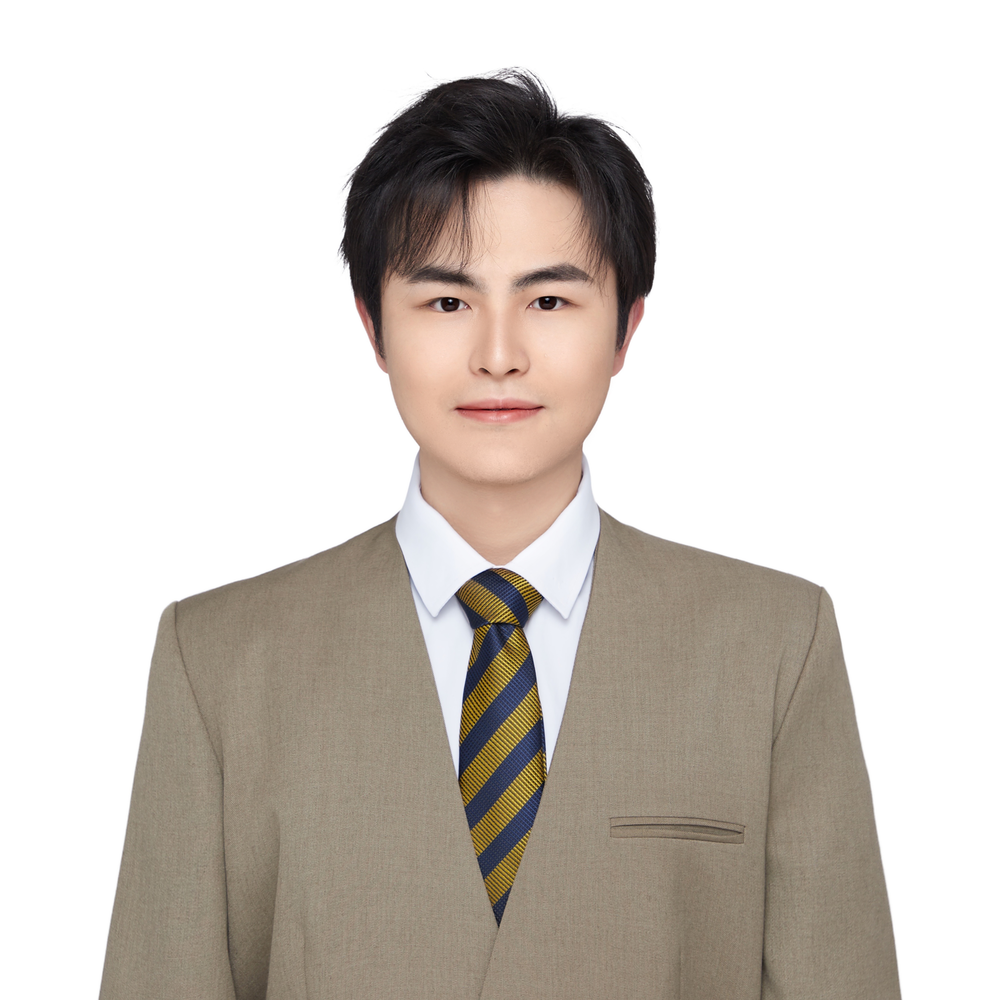

Shu-Hao Zhang @ LAMDA
|
 |
张 书 豪
|
|


Education
-
2025.09 - present
Ph.D. candidate: Computer Science and Technology, School of Intelligence Science and Technology, Nanjing University.
-
2023.09 - 2024.11
M.Sc. degree: Computer Science, School of Computing and Data Science, The University of Hong Kong.
-
2017.09 - 2023.06
B.Eng. and B.Lit. degree: Software Engineering and Translation, College of Software and School of Foreign Studies, Nankai University.
Internship
-
2025.01 - 2026.01: Microsoft AI
Research Intern, Microsoft AI, Microsoft, Suzhou, China.
-
2023.09 - 2024.11: Tencent Security
Security Intern, Tencent Security, CSIG, Tencent, Guangzhou, China.
Projects
-
EdgeRazor: I am a core developer of the open-sourced framework EdgeRazor that compresses LLMs into flexible bit-widths, achieving state-of-the-art performance in the sub-4-bit regime to facilitate resilient edge deployment.
Research Interests
My current research interests mainly include Lightweight Computation, Large Language Model and AI Agent. More specifically, I am interested in the following topics:-
Lightweight Computation
- with Model Compression. Model compression techniques including distillation and quantization are essential for deploying large neural networks on resource-constrained devices. Knowledge distillation transfers knowledge from large teacher models to smaller student models, while quantization reduces the precision of model parameters. These approaches enable efficient inference while maintaining competitive performance.
- with AI Agent Systems. AI agents represent autonomous systems capable of perceiving their environment, making decisions, and taking actions to achieve specific goals. This research area focuses on developing intelligent agents that can reason, plan, and interact with complex environments, bridging the gap between large language models and real-world applications through multimodal understanding and tool usage.
Teaching Assistant
-
Probability and Statistics (with Prof. Shao-Qun Zhang; for undergraduate students), Fall, 2025.